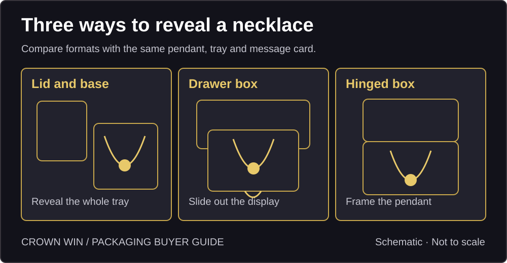
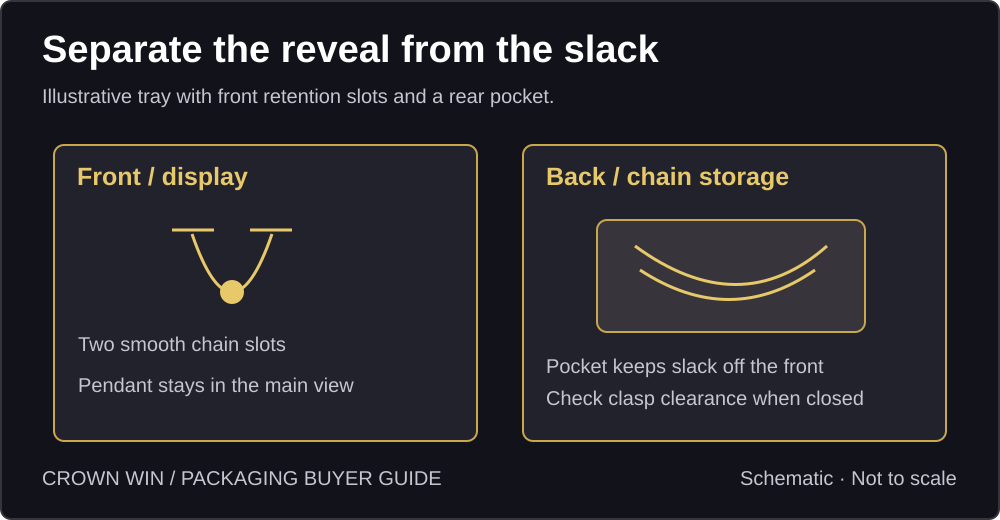
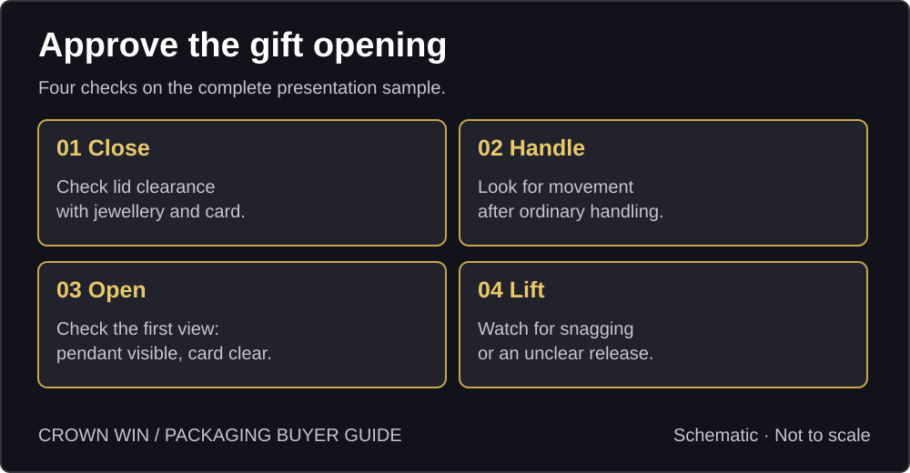

How to Design Necklace Gift Boxes:
Presentation, Fit & Opening
Compare necklace gift box styles, plan pendant display and chain storage, and check the complete gift presentation before production.
Quick answer: Choose a gift box around the opening experience: show the pendant first, give the chain and clasp a defined place, and make the necklace easy to lift. Check the whole sample with the actual necklace, insert and card before you approve production.
What should the recipient see first?
Start with the moment the recipient opens the gift. Put the pendant in the main viewing area, keep the clasp out of sight if practical, and place the message card where it does not hide the jewellery. Leave space to lift the piece without touching or pulling the chain. A box that looks good in a closed product photo can still be awkward to open.
What can Reddit tell us about gift presentation?
In a jewellery discussion, a buyer reported a knotted necklace on arrival. In a separate gift-packaging discussion, a buyer expected a different presentation for a pendant bought as a gift. These are individual accounts. They do not prove what caused the knot or what buyers generally prefer. They suggest two sample checks: does the necklace still look ready to give when opened, and does the delivered pack match the gift option shown online?
Which necklace gift box should you sample?
Lid-and-base box: lifting the lid exposes the whole tray at once. It suits a clean overhead reveal; check how easily the lid lifts, and make sure tissue or a card does not move onto the pendant.
Drawer box: the tray slides out in stages. Check the pull tab, whether the tray stays level in the hand, and whether the necklace or card catches on the sleeve.
Hinged gift box: an attached lid can frame the display. Check the open angle and whether the lid stays comfortably open while the recipient lifts the necklace. Try each format with the same necklace, insert and card before comparing price or packing time.


How should the insert support the necklace?
Plan a visible face and a separate place for excess chain. A fine chain may use two smooth retention slots with slack gathered behind the tray in a pocket. A heavy pendant may need a shallow cradle that supports the pendant itself rather than loading the chain. For layered necklaces, evaluate separate routes for each chain. These are starting points: check actual chain thickness, clasp size, pendant depth and clearance when the box closes. A slot should hold without pinching; a pocket should not leave the clasp loose against the pendant.


How do you approve a gift-ready sample?
Close: pack the actual necklace, card and any sleeve or wrap. Check for bulges, pressure marks and contact between the lid and pendant.
Handle: simulate ordinary handling on a sample and look for shifted chains or cards. This is an initial fit check, not shipping validation.
Open: take a photo of the first view. Confirm the pendant is visible and the packaging matches the online gift option.
Lift: ask someone unfamiliar with the design to remove the necklace. Watch for snagging, awkward grip or a hidden release step. For e-commerce, check the presentation box within the complete parcel separately using the shipping carton guide.


What should a supplier quote include?
Share a physical necklace or dimensioned drawing, including chain length and thickness, pendant size and weight, and clasp size. State the preferred reveal, card size, gift wrap, quantity by SKU and destination. Ask for box, insert, card and assembly to be priced separately and agree which sample version will be used for approval.
Research scope: The linked Reddit posts are individual accounts, not performance tests or a consumer survey.
Start with the actual necklace.
Share pendant size, chain length, preferred box style and quantity to discuss a sample.
→ Request a Custom Quote